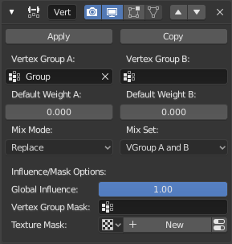

顶点权重混合修改器¶
此修改器使用不同的操作将第二个顶点组（或简单值）混合到受影响的顶点组中.
Important
此修改器会在标准（0.0到1.0）范围内隐含地限制权重值。 低于0.0的所有值都将设置为0.0，高于1.0的所有值都将设置为1.0.
Note
You can view the modified weights in Weight Paint Mode. This also implies that you will have to disable the Vertex Weight Mix modifier if you want to see the original weights of the vertex group you are editing.
选项¶

The Vertex Weight Mix modifier panel.
- 顶点组A
- 要影响的顶点组.
- 默认权重A
- 分配给不在给定顶点组中的所有顶点的默认权重.
- 顶点组B
- 第二个顶点组混合到受影响的那个。 如果您只想混合一个简单的值，请将其留空.
- 默认权重B
- 分配给不在给定第二个顶点组中的所有顶点的默认权重.
- 混合节点
顶点组权重如何受其他顶点组权重的影响.
- 替换权重
- 用第二组的权重替换受影响的权重.
- 添加到权重
- 添加 B组 的值到 A组.
- 从权重减去
- 从 A组 减去 B组 的值.
- 乘以权重
- 用 B组 的值乘上 A组.
- 除以权重
- 用 A组 的值除以 B组.
- 差值
- 从较大的值中减去两个值中较小的一个.
- 平均
- 将值加在一起，而不是除以2.
- 混合设定
将会影响到哪些顶点.
- 所有顶点
- 影响所有顶点, 忽略顶点组内容.
- 来自A组的顶点
- 只影响属于要被影响的顶点组的顶点.
- 来自B组的顶点
- 只影响属于第二个顶点组的顶点.
- 来自一个组的顶点
- 只影响属于最后一个顶点组的顶点.
- 来自两个组的顶点
- 只影响属于两个顶点组的顶点.
Important
当使用 所有顶点, 来自B组的顶点 或 来自一个组的顶点,顶点会被添加到被影响的顶点组中.
影响 / 遮罩选项¶
Those settings are the same for the three Vertex Weight modifiers, see the Vertex Weight Edit modifier page.


{kind=link}